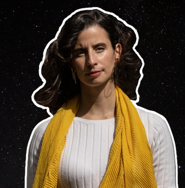

Atualmente, sou professora no Bard College, nos Estados Unidos, e investigadora no Instituto de Astrofísica e Ciências do Espaço. Doutorei-me em Química Quântica na University College London e concluí o mestrado em Física e Astronomia na Universidade de Edimburgo, na Escócia. Dedico muito do meu tempo a investigar como as moléculas interagem com a luz e como as podemos identificar em mundos longínquos. Ao longo do meu percurso, especializei-me no estudo de moléculas que podem ser produzidas por vida, com o objetivo de um dia detetar uma biosfera alienígena.
Para ti, o que é a astrobiologia?
A astrobiologia é a derradeira ciência interdisciplinar. Não se trata apenas de Astronomia e Biologia; é Geofísica, Fotoquímica, Mecânica Quântica, Filosofia, Poesia.
Qual foi a tua reação quando soubeste que uma potencial bioassinatura poderia ter sido detetada na atmosfera de Vénus?
Quando soube que a minha molécula predileta, a fosfina, poderia ter sido encontrada tão perto de casa, senti uma onda oscilante de alegria e pavor, de esperança e ceticismo. Talvez a minha especialização extremamente específica, e anos de trabalho, tivessem dado em algo incrível e verdadeiramente digno de escrutínio; mas, talvez, esse mesmo escrutínio estivesse prestes a revelar algum erro colossal no meu trabalho, capaz de destruir a minha carreira.
O que é que te convenceria de que uma atmosfera de um exoplaneta apresenta sinais de vida?
Com a nossa tecnologia atual, não ficaria convencida de que foi detetada vida para além da Terra sem sinais de tecnologia, como poluentes complexos ou um sinal de rádio sofisticado. Muitos tipos de desequilíbrio atmosférico, ou a presença de uma molécula exótica como a fosfina, não me convenceriam, embora me dessem esperança. Mas a esperança pode ser a inimiga da razão nestas situações.
Que conselho dás aos futuros astrobiólogos portugueses?
O meu único conselho para quaisquer astrobiólogos emergentes é que temam e, ao mesmo tempo, aceitem a sua interdisciplinaridade. É avassalador sentir (corretamente) que é necessária especialização em demasiados campos científicos, mas isso liberta-nos para encontrar o nosso nicho específico entre eles, o que é, e deve ser, extremamente entusiasmante. E, claro, não trabalhem com cabrões, por mais famosos que eles sejam.
Trabalhaste num sítio que recebia chamadas sobre “avistamentos de OVNIs”. No fim de contas, o que é que essas situações costumavam ser?
Quando me pedem para explicar fenómenos de OVNIs, trata-se quase sempre de uma combinação de física e psicologia. Posso dar, e dou frequentemente, explicações científicas, como distorções óticas ou tecnologia humana; mas, em última análise, acredito que a maioria dos 'avistamentos' é, acima de tudo, um produto da solidão.